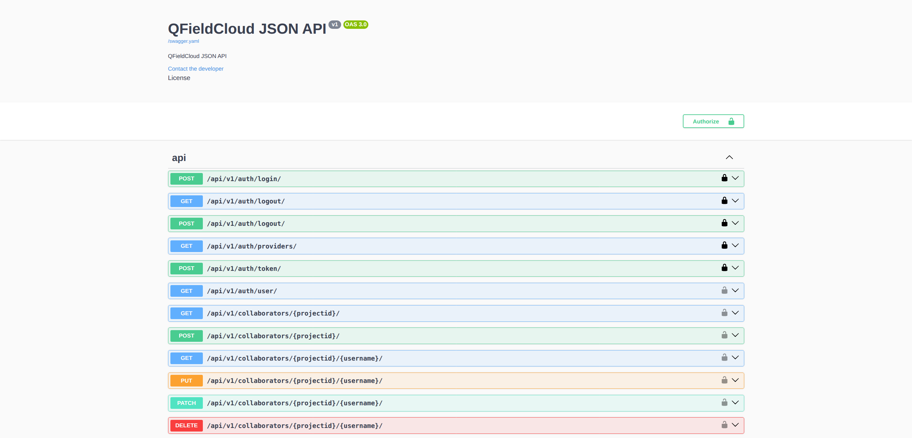
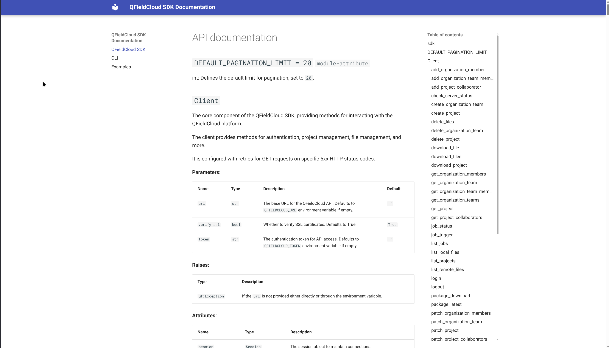

Manage your fieldwork directly from your app with QFieldCloud API integration

Ivan Ivanov, OPENGIS.ch
OPEN SOURCE
GEONINJAS
MADE IN
SWITZERLAND
we l[i|o]ve open source.
What is QFieldCloud?
Your tool for seamless fieldwork!
☁️ Centralized project, data and settings management for QGIS/QField projects.
🤝 Collaboration - users, organizations, teams.
✏️ Data versioning.
🧑💻 API integrations.

Use app.qfield.cloud
the OPENGIS.ch hosted solution
QFieldCloud is hosted in Switzerland!

Use dedicated/on-premises QFieldCloud
your own QFieldCloud
QFieldCloud is hosted in your organization!
Use QFieldCloud
hosted by yourself
$ git clone git@github.com:opengisch/QFieldCloud.git
2025
in review

800 code changes
35 released versions

9000
unique active monthly users
on app.qfield.cloud
Notable 2025 features
- Speed - make file handling equally fast for both small and large projects.
- Shared datasets - upload your basemaps once, use it within all projects in your organization.
- Organization and user level secrets - having to declare the same secrets for each individual project was tiring.
- Single sign-on (SSO) support - sign in via Google OIDC.
And more, thanks to you,
our users and supporters!
Integrate QFieldCloud in your workflow
😎 Stable APIs - integrate with QFieldCloud using the RESTful API documented with OpenAPI/Swagger.
💻 Use the CLI - pip install qfieldlcoud-sdk and use qfieldcloud-cli in your shell.
🐍 Use the SDK - pip install qfieldcloud-sdk and import qfieldcloud_sdk in Python.
☁️ Extend QFieldCloud - build an app on top of QFieldCloud.
QFieldCloud API
app.qfield.cloud/swagger

Example with our beloved curl
IN:
curl -X 'POST' \
'https://app.qfield.cloud/api/v1/auth/login/' \
-H 'accept: application/json' \
-H 'Content-Type: application/x-www-form-urlencoded' \
-d 'username=foss4g2025&email=&password=kiaorakoprivshtitsa'
OUT:
{
"token": "o4OahKpKw7N16BTdD8uqsNxHbNHuYIFeCxVGPIei2KQaRPue8wOaDU7B4ZnanDwPIQFG3ZAoDZy3odkQJSBK8jV8p0GKMfNAjaFN",
"expires_at": "2025-12-19T00:14:10.956438+01:00",
"username": "foss4g2025",
"type": "1",
"email": "ivan+foss4g2025@opengis.ch",
"avatar_url": "https://app.qfield.cloud/api/v1/files/avatars/foss4g2025/avatar..png",
"first_name": "Kia",
"last_name": "Ora",
"full_name": "Kia Ora"
}
Use qfieldcloud-sdk-python
Check repo
github.com/opengisch/qfieldcloud-sdk-python
Install
$ pip install qfieldcloud-sdk
Usage
$ qfieldcloud-cli --help
Login
IN:
$ qfieldcloud-cli login foss4g2025 kiaorakoprivshtitsa
OUT:
Log in foss4g2025…
Welcome to QFieldCloud, foss4g2025.
QFieldCloud has generated a secret token to identify you. Put the token in your in the environment using the following code, so you do not need to write your username and password again:
export QFIELDCLOUD_TOKEN="LnNOo4vRtXCb3RBi9mRhi4yl8x3VeLD75ofWTzWrcGAUll8TS0JP0Ko0tNAv7PFZ6nQDtodM2gpzI2M7NXBIBcp6Li44ldWoYnwd"
Alternatively, you can:
$ qfieldcloud-cli --username foss4g2025 --password kiaorakoprivshtitsa list-projects
List projects
IN:
$ qfieldcloud-cli list-projects
OUT:
Listing projects…
User does not have any projects yet.
Create project
IN:
qfieldcloud-cli create-project --description 'Daily work project' --is-private 'Tree_Survey'
OUT:
$ qfieldcloud-cli create-project --description 'Daily work project' --is-private 'Tree_Survey'
Creating project Tree_Survey…
Created project:
| ID | OWNER/NAME | IS PUBLIC | DESCRIPTION |
--------------------------------------------------------------------------------------------------
| e22f9c7f-5ee3-4950-8f6d-b39d493fd536 | foss4g2025/Tree_Survey | 0 | Daily work project |
List projects (as JSON)
IN:
$ qfieldcloud-cli --json list-projects
OUT:
[
{
"can_repackage": true,
"created_at": "2025-11-19T00:49:14.928258+01:00",
"data_last_packaged_at": null,
"data_last_updated_at": null,
"description": "Daily work project",
"id": "e22f9c7f-5ee3-4950-8f6d-b39d493fd536",
"is_attachment_download_on_demand": false,
"is_featured": false,
"is_public": false,
"is_shared_datasets_project": false,
"name": "Tree_Survey",
"needs_repackaging": true,
"owner": "foss4g2025",
"private": true,
"shared_datasets_project_id": null,
"status": "failed",
"updated_at": "2025-11-19T00:49:14.928281+01:00",
"user_role": "admin",
"user_role_origin": "project_owner"
}
]
Upload files to a project
IN:
$ qfieldcloud-cli upload-files e22f9c7f-5ee3-4950-8f6d-b39d493fd536 .
OUT:
Uploading "datasets/bees.gpkg"...: 164kB [00:01, 107kB/s]
Uploading "DCIM/lavender.jpg"...: 72.7kB [00:00, 118kB/s]
Uploading "DCIM/grass.jpg"...: 75.8kB [00:00, 82.4kB/s]
Uploading "DCIM/1.jpg"...: 162kB [00:01, 158kB/s]
Uploading "DCIM/weed.jpg"...: 127kB [00:00, 137kB/s]
Uploading "DCIM/colza.jpg"...: 113kB [00:00, 123kB/s]
Uploading "DCIM/LICENSE"...: 836B [00:00, 1.37kB/s]
Uploading "DCIM/4.jpg"...: 146kB [00:01, 118kB/s]
Uploading "DCIM/2.jpg"...: 78.6kB [00:00, 85.4kB/s]
Uploading "DCIM/taraxacum.jpg"...: 79.8kB [00:00, 86.6kB/s]
Uploading "DCIM/3.jpg"...: 75.0kB [00:00, 81.5kB/s]
Uploading "basemaps/laax.gpkg"...: 1.93MB [00:03, 496kB/s]
Uploading "bees.qgz"...: 122kB [00:00, 199kB/s]
Uploading files "e22f9c7f-5ee3-4950-8f6d-b39d493fd536" from .…
Upload finished after uploading 13.
Python SDK you said too!
from qfieldcloud_sdk import sdk
client = sdk.Client()
resp = client.login("foss4g2025", "kiaorakoprivshtitsa")
resp["token"]
OUT:
'gNCU0LvKR4NiEUwhk5ytx7D2kTBWcGpU03yJH9WxElQJyNC9rzbmeMoTbgZCI15PqorbiJt3yVvDggDzdqwGZxFBCKgz1aU69LaJ'
List projects files
IN:
client.list_remote_files("e22f9c7f-5ee3-4950-8f6d-b39d493fd536")
OUT:
[
{
"etag": "4ab247c77cc1d17307dfb772954b7eab",
"is_attachment": false,
"last_modified": "18.11.2025 23:57:06 UTC",
"md5sum": "4ab247c77cc1d17307dfb772954b7eab",
"name": "basemaps/laax.gpkg",
"sha256": "4601ba41fe33143e5f9957faa5c55ea066f8e5c668e3c0c173400992c039c117",
"size": 1929216,
"uploaded_at": "2025-11-19T00:57:06.392814+01:00",
"versions": [
{
"display": "v20251118235706",
"is_latest": true,
"last_modified": "18.11.2025 23:57:06 UTC",
"md5sum": "4ab247c77cc1d17307dfb772954b7eab",
"sha256": "4601ba41fe33143e5f9957faa5c55ea066f8e5c668e3c0c173400992c039c117",
"size": 1929216,
"uploaded_at": "2025-11-19T00:57:06.392814+01:00",
"version_id": "88916c41-d492-4f56-b63e-7f55f73a89f7"
}
]
},
// ...
]
Useful tricks
Make backup of all images at 08:47:
47 8 * * * mkdir -p /tmp/foss4g2025 && qfieldcloud-cli download-files --filter '**/*.jpg' e22f9c7f-5ee3-4950-8f6d-b39d493fd536 /tmp/foss4g2025
Check docs
opengisch.github.io/qfieldcloud-sdk-python

Success stories
TONGA
MAFF
-
Photo capture as attachments to referenced geometries.
-
QFC API / SDK allowed for custom application integration.
- QFC API documentation allowed for easy writing of a R module to communicate with QFC server/project data
FUTURA SISTEMI
City trees management
-
Integration with 3rd party WebGIS management system through QFC API.
-
Leveraging QField/QFC offline work capability.

Yeah, I am almost convinced, but…
- I have no idea if QFieldCloud is going to work for us…
- I am almost convinced, but I need a clarification about…
- I am fully convinced QFieldCloud is great, but we will need some training…
- Where do we even get started with all these features…
- If only it were possible to customize this for us by adding…
- It looks nice, but I’m missing the one feature that is preventing us from using it…
- We have a much more complex system, and we need more information on how to integrate it…
Drop us an email at sales@qfield.cloud
or ask the community at community.qfield.org
or find us around during the event.
Friday, 10:00 AM

Thank you!
@suricactus
{kind=link}